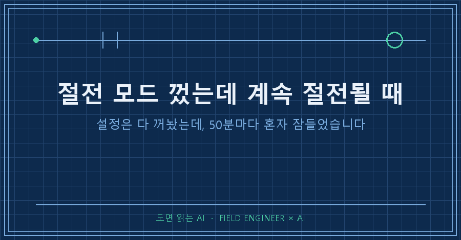
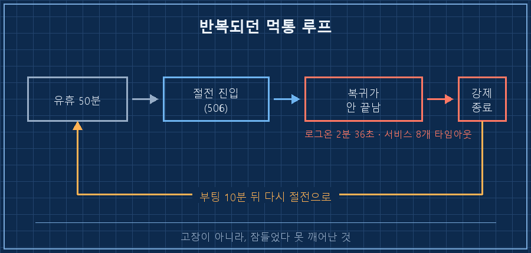
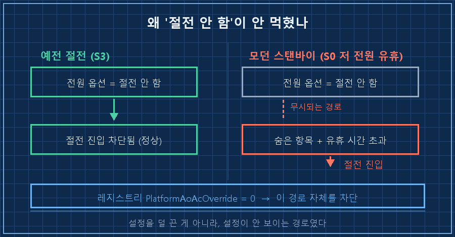
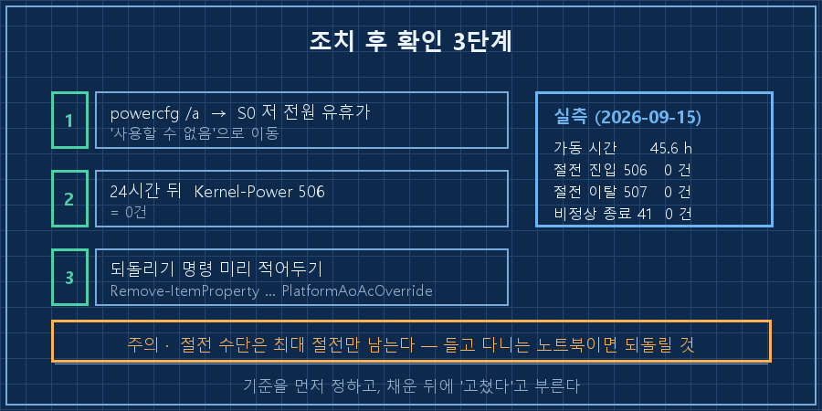

그날 저는 전원 버튼을 두 번 길게 눌렀습니다. 화면도 안 켜지고 원격으로도 안 들어가지니, 남은 방법이 그것뿐이었어요.
절전 모드 껐는데 계속 절전되는 증상은 대부분 설정을 덜 껐기 때문이 아닙니다. 요즘 노트북이 예전 절전(S3)이 아니라 "모던 스탠바이"라는 다른 방식을 쓰는데, 이 방식은 전원 옵션의 "절전 안 함"을 보지 않는 경로가 있어요. 그래서 전원 옵션이 아니라 레지스트리 한 줄로 절전 방식 자체를 꺼야 멈춥니다.
2026년 9월 기준 Windows 10 Pro(빌드 19045)에서 잡은 내용이고, 11도 구조는 같습니다. 관리자 권한 PowerShell만 있으면 되고 설치할 프로그램은 없어요. 다만 항상 켜두고 쓰는 PC 기준입니다. 들고 다니는 노트북이라면 권하지 않는데, 이유는 4번에 적어뒀습니다.
제어 일을 15년쯤 하면서 배운 게 하나 있다면, 안 멈춘다고 적혀 있는 설비일수록 멈추는 방식이 이상하다는 겁니다. 이번엔 그게 제 노트북이었어요..
1. 설정은 다 꺼놨는데 50분마다 들어갔어요
집에 노트북을 켜두고 밖에서 원격으로 씁니다. 그런데 며칠 사이, 들어가려고 하면 먹통인 날이 반복됐어요. 로그를 뽑아보니 이렇게 나와 있었습니다. (기기 정보는 지우고 시각만 옮겼어요)
12:50:01 [507] 절전에서 빠져나옴 사유: 마우스 입력
12:50:18 원격 접속 시도
12:50:36 사용자 서비스 8개가 동시에 30초 타임아웃
12:52:37 로그온 성공 — 2분 36초 걸림 (정상은 몇 초)
12:53:33 응답 없음. 전원 버튼 길게 눌러 강제 종료
13:39:11 [506] 다시 절전으로 들어감 사유: 유휴 시간 초과깨우기는 됩니다. 문제는 복귀가 끝나질 않는다는 것이었어요. 화면도 안 오고 원격도 안 붙으니 선택지가 전원 버튼밖에 없었습니다. 그날 그렇게 두 번 껐어요.
여기서 한 번 크게 틀렸습니다. 처음엔 비정상 종료 기록(Kernel-Power 41) 두 건을 보고 "하드웨어가 죽는다"로 읽었거든요. 그런데 그 기록의 정체는 제가 전원 버튼을 누른 흔적이었어요. 기계 로그는 결과만 남기고 왜 그랬는지는 안 남깁니다. 이 한 마디가 없었으면 멀쩡한 메인보드를 며칠 더 의심했을 거예요.
더 이상한 건, 전원 옵션에서 절전은 이미 "안 함"이었다는 점입니다. 그런데도 손을 떼고 50분쯤 지나면 어김없이 들어갔어요.

2. 내 PC가 어떤 절전을 쓰는지부터 보세요
절전 모드 껐는데 계속 절전되는 원인은 설정값이 아니라 장비가 지원하는 절전 종류에 있어요. 명령 한 줄이면 나옵니다.
powercfg /a조치 전 제 노트북 결과는 이랬어요.
이 시스템에서 다음 절전 모드를 사용할 수 있습니다.
대기 모드(S0 저 전원 유휴)
최대 절전 모드
이 시스템에서 다음 절전 모드를 사용할 수 없습니다.
대기 모드(S1) / (S2) / (S3)
시스템 펌웨어에서 이 대기 모드를 지원하지 않습니다.S3가 아래쪽에 있고 위에는 "S0 저 전원 유휴"만 남아 있죠. 이게 모던 스탠바이 전용 장비라는 뜻입니다. 고를 수 있는 게 아니라 그것밖에 없는 거예요.
| 구분 | 예전 절전(S3) | 요즘 절전(S0 저 전원 유휴) |
|---|---|---|
| 상태 | 메모리만 남기고 사실상 꺼짐 | 켜진 채로 저전력 유지 |
| 깨우는 신호 | 전원·키보드 정도 | 입력·네트워크·타이머 등 다양 |
| 전원 옵션 "절전 안 함" | 그대로 먹힘 | 무시되는 경로가 있음 |
| 복귀에 실패하면 | 대개 재시작으로 끝 | 화면·원격이 동시에 먹통 |
제 경우 "절전 모드로 전환", "최대 절전 모드로 전환"이 둘 다 '안 함'이었는데도 유휴 시간 초과로 진입했습니다. 덮개 닫기 동작은 전원 옵션 화면에 항목조차 없었고요. 보이지도 않는 설정이 뒤에서 돌고 있었던 셈이에요. 여러분 PC는 위 목록에서 어느 쪽이던가요?

3. 숨은 설정을 꺼내고, 레지스트리 한 줄을 넣었습니다
관리자 권한 PowerShell에서 순서대로 합니다. 세 단계예요.
① 전원 옵션에 숨어 있는 항목 네 개를 화면에 꺼냅니다
$SLEEP = '238c9fa8-0aad-41ed-83f4-97be242c8f20' # 절전 그룹
$BUTTON = '4f971e89-eebd-4455-a8de-9e59040e7347' # 전원 단추/덮개 그룹
powercfg /attributes $SLEEP 7bc4a2f9-d8fc-4469-b07b-33eb785aaca0 -ATTRIB_HIDE # 무인 절전 시간 제한
powercfg /attributes $SLEEP d4c1d4c8-d5cc-43d3-b83e-fc51215cb04d -ATTRIB_HIDE # 시스템 무인 절전
powercfg /attributes $BUTTON 5ca83367-6e45-459f-a27b-476b1d01c936 -ATTRIB_HIDE # 덮개 닫기 동작
powercfg /attributes $BUTTON 7648efa3-dd9c-4e3e-b566-50f929386280 -ATTRIB_HIDE # 전원 단추 동작-ATTRIB_HIDE는 숨기라는 뜻이 아니라 숨김 속성을 떼라는 뜻이에요. 이름 때문에 반대로 읽기 쉬운 자리입니다.
② 꺼낸 값을 전부 0(안 함)으로, 콘센트·배터리 양쪽 다
powercfg /setacvalueindex SCHEME_CURRENT $SLEEP 7bc4a2f9-d8fc-4469-b07b-33eb785aaca0 0
powercfg /setdcvalueindex SCHEME_CURRENT $SLEEP 7bc4a2f9-d8fc-4469-b07b-33eb785aaca0 0
powercfg /setacvalueindex SCHEME_CURRENT $SLEEP bd3b718a-0680-4d9d-8ab2-e1d2b4ac806d 0 # 해제 타이머 끄기
powercfg /setacvalueindex SCHEME_CURRENT $BUTTON 5ca83367-6e45-459f-a27b-476b1d01c936 0 # 덮개 닫기: 아무것도 안 함
powercfg /setactive SCHEME_CURRENTAC만 하고 DC를 빼먹으면 전원 뽑았을 때 그대로 재발해요. 저는 일곱 항목을 양쪽 다 넣었습니다.
③ 모던 스탠바이 자체를 끕니다 — 이게 결정타입니다
New-ItemProperty -Path 'HKLM:\SYSTEM\CurrentControlSet\Control\Power' `
-Name 'PlatformAoAcOverride' -PropertyType DWord -Value 0 -Force그리고 재부팅. ③은 재부팅해야 적용됩니다. ①②만 하고 덮으면 증상이 그대로 남아요. 솔직히 저는 재부팅 버튼 누르기 전까지 이게 될까 싶었습니다.
4. 고쳐졌는지는 이렇게 확인했어요
1단계 — 절전 목록이 이동했는지
powercfg /a"대기 모드(S0 저 전원 유휴)"가 사용할 수 없는 쪽으로 내려갔으면 성공입니다. 여기서 놀라지 마세요. 사유가 "시스템 펌웨어에서 이 대기 모드를 지원하지 않습니다"로 뜹니다. BIOS가 고장 난 게 아니라, 방금 넣은 값이 시킨 대로 동작하는 거예요. 저도 이 문구 보고 잠깐 식은땀 났어요..
2단계 — 진입 기록이 0인지 (24시간 뒤)
Get-WinEvent -FilterHashtable @{LogName='System';
ProviderName='Microsoft-Windows-Kernel-Power'; Id=506} -MaxEvents 5506은 "절전으로 들어갔다"는 기록이에요. 결과가 안 나오면 진입이 사라진 겁니다.
저는 판정 기준을 24시간으로 먼저 못박아 뒀는데, 조치 직후엔 1시간 40분치 데이터밖에 없었어요. 그래서 그날 기록에는 "잠정 양호"라고만 적었습니다. 기준을 스스로 정해놓고 미달인 채로 "고쳤다"고 부르기가 싫었거든요.
이 글을 쓰면서 다시 쟀습니다. 2026년 9월 15일 기준이에요.
가동 시간 : 45.6 시간
절전 진입 (506) : 0 건
절전 이탈 (507) : 0 건
비정상 종료 (41) : 0 건
PlatformAoAcOverride : 0조치 전에는 손 떼고 50분에서 한 시간이면 반드시 들어갔어요. 지금은 45시간 넘게 한 번도 안 들어갔습니다. 이제 완치라고 불러도 되겠네요.
3단계 — 되돌리는 명령을 같이 적어두기
Remove-ItemProperty 'HKLM:\SYSTEM\CurrentControlSet\Control\Power' PlatformAoAcOverride
powercfg /setacvalueindex SCHEME_CURRENT $SLEEP bd3b718a-0680-4d9d-8ab2-e1d2b4ac806d 1
powercfg /setactive SCHEME_CURRENT그리고 이건 꼭 알고 시작하세요. 이 조치를 하면 그 PC에서 절전이 통째로 사라집니다. S3를 못 쓰는 장비라 대신 들어갈 절전이 없거든요. 남는 건 최대 절전(디스크에 저장하고 끄는 방식)뿐이에요. 덮개를 닫아도 안 꺼지니 그대로 가방에 넣으면 뜨거워집니다. 24시간 켜두는 PC에는 맞는 조치지만, 들고 다니는 노트북에는 안 맞아요.

이건 걸리실 것 같아 미리 적어둡니다
Q. 전원 옵션에서 "절전 안 함"으로 해놨는데 왜 또 들어가나요?
"무인 절전 시간 제한"처럼 화면에 안 보이는 항목이 따로 돌고 있어서예요. 3번의 ①번 명령으로 꺼내야 보입니다. 그것까지 다 꺼도 모던 스탠바이는 진입하는 경우가 있어서 ③번이 필요했어요.
Q. 제 PC는 S3가 "사용할 수 있음"에 있는데요?
그럼 이 글의 ③번은 필요 없습니다. 예전 방식이라 전원 옵션 설정이 그대로 먹혀요. 그래도 먹통이 반복된다면 절전이 아니라 다른 원인(드라이버·서비스)을 보셔야 합니다.
Q. 레지스트리 건드리는 게 무섭습니다.
값 하나 만들고 지우는 게 전부고 되돌리기가 한 줄이에요. 저는 지우는 명령을 미리 메모장에 붙여놓고 시작했습니다.
절전 하나 껐을 뿐인데 같이 조용해진 게 하나 더 있어요. 초 단위로 로그를 쏟아내던 드라이버가 분당 8건에서 0.078건으로, 100배 가까이 잠잠해졌습니다. 다만 이건 인과를 확정하지 못했습니다. 대조할 예전 로그가 이미 밀려나 사라진 뒤였거든요. 정황은 맞아떨어지지만 "추정"으로만 적어둡니다.
지금 켜둔 PC가 밤사이 혼자 잠들어 있다면, powercfg /a 한 줄부터 쳐보세요. 위쪽 목록에 S0 저 전원 유휴가 있으면 이 글이 그대로 해당됩니다.
같은 노트북에서 줄줄이 나온 나머지 원인들은 makefield.ai 쪽에 한 묶음으로 올려두고 있습니다.